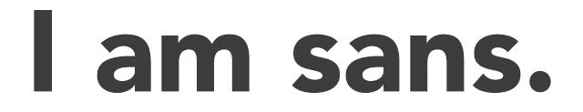
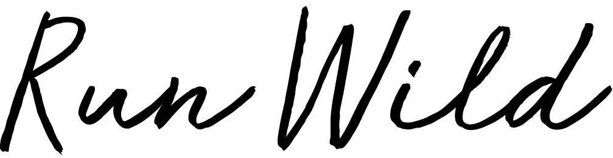

I et design skal man undgå at bruge mere end 2 forskellige skrifttyper, da det vil give et rodet og uoverskueligt udtryk.
Det er vigtigt at der forekommer en tydelig forskel på de 2 forskellige skrifttyper.
Typografi er fonte, kolonner, læsbarhed, layout, billeder og logo.
Fonte kan være med til at angive en stemning, og kan bruges som et fortællerredskab.
Fonte opdeles i forskellige familier/font-family
På Serif fonten er der små fødder på alle bogstaverne.
Fonten fremstår elegant, signalerer tradition, historie og noget gammeldags. Dette er en meget læsevenlig skrifttype på papir.
Er lidt anderledes end Serif fonten, den har nemlig ikke små fødder på bogstaverne. San Serif fremstår også meget mere nutidigt og moderne.
Som navnet antyder, ligner denne font håndskrift, og det giver skriften et gammeldags udtryk. Mono Space familien: Skrifttypen har alle bogstaver og tegn i den samme brede, og den ligner skrift skrevet med en gammel skrivemaskine. Skrifttypen giver udtrykket af noget rustikt. Denne skrifttype er ikke særlig velegnet til meget lange brødtekster.
En af de mest velkendte inden for fantasy skrifttyper er Comic Sans, som er blevet brugt rigtig meget på nettet. Nu opfattes Comic Sans dog for værende meget umoderne og virker meget useriøst. Fantasy skrifttypen kaldes bl.a. for designer skrifttype.
Minuskler: små bogstaver Majuskler: Store bogstaver (versale eller blokbogstaver) x-height: Højden på minusklen x målt fra bundlinjen til toppen af bogstavet. Leading: Linjeafstand (typisk udregnes leading med 120-130% af skriftstørrelsen) Kerning: Kendt som knibning, afstanden mellem hvert enkelt bogstav. Tracking: justerer den overordnede afstand mellem alle bogstaver i et ord eller en længere markering af ord.